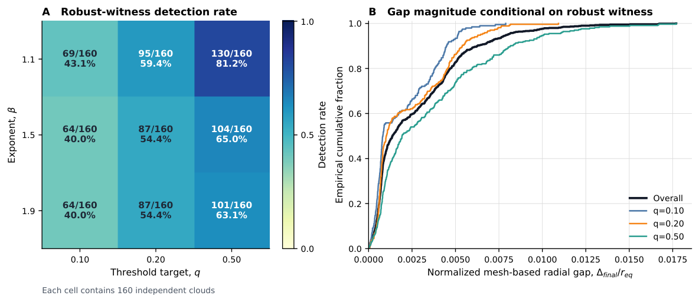

A companion Lean 4 development machine-checks the convex-score counterexample, the energy-form score identity, the common-center star-shaped geometry, and the univariate empirical-CRPS interval theorem.
Abstract
This note studies the geometry of full conformal prediction (FullCP) regions generated by an empirical energy-form pairwise score. Candidate-score convexity alone does not guarantee connected FullCP regions, even for empirical averages of losses convex in the candidate argument. For the energy-form score, each leave-one-out training comparison reduces exactly to a pairwise-dissimilarity sublevel condition. Under symmetry, a constant diagonal, a diagonal lower bound, and attainment of the associated Fréchet-type objective, all comparison regions share a minimizer; if they are convex, every nontrivial exact conformal region is star-shaped about that point. For power distances $ρ_β(x,y)=\|x-y\|^β$, this geometry holds for $β\ge1$, while the conventional energy score is strictly proper for $0<β<2$. For $d=1,β=1$, every nontrivial empirical-CRPS FullCP region is a nonempty closed interval (possibly $\mathbb R$ when $m=1$). For $1<β<2$ and $m\ge2$, explicit data-checkable derivative bounds give Lipschitz control of the radial exits and exact conformal radial function. Combined with directional root search and classical Lipschitz extensions, they yield certified inner and outer radial envelopes of width at most $δ+2\widetilde Lh_{\mathcal U}$ and same-ray Hausdorff guarantees. An analytic two-dimensional example shows why preserving star-shaped but nonconvex geometry can matter. A staged two-dimensional study finds modest but systematic tightening of the generic certificate and frequent robust nonconvexity witnesses, with detected normalized radial departures typically small. The method is intended for low-dimensional multivariate outputs rather than high-dimensional scaling or runtime improvement.
Problem
Studies the geometry of full conformal prediction (FullCP) regions built from an empirical energy-form pairwise score. Convexity of the candidate score alone does not guarantee connected FullCP regions, so the question is which score-specific structure does yield well-behaved regions.
Approach
Each leave-one-out comparison is reduced exactly to a pairwise-dissimilarity sublevel condition. Under symmetry, a constant or lower-bounded diagonal, and an attained Fréchet-type minimizer, all comparison regions share a common center, so exact conformal regions are star-shaped about it. For power distances with 1<β<2, explicit data-checkable derivative bounds give Lipschitz control of the radial exits, which is combined with directional root search and McShane–Whitney extensions to produce certified radial envelopes. Core structural results are machine-checked in a companion Lean 4 development.
Results
For d=1 and β=1, every nontrivial empirical-CRPS FullCP region is a closed interval, which settles a single-interval property for Toccaceli's construction. Certified envelopes have width at most δ+2L̃h and come with same-ray Hausdorff guarantees. In a 2D simulation study, the median ratio L̃/L_old was 0.966, and nonconvexity witnesses were frequently detected but were typically shallow.

Figure 3: Nonconvexity diagnostics in the staged two-dimensional study. Panel A reports robust-witness detection rates, with 160 independent clouds in each fixed \beta/q_{\rm vote} cell. Panel B gives the empirical CDF of the normalized mesh-based radial convexification-gap approximation conditional on a robust witness. NONE_DETECTED does not certify convexity.